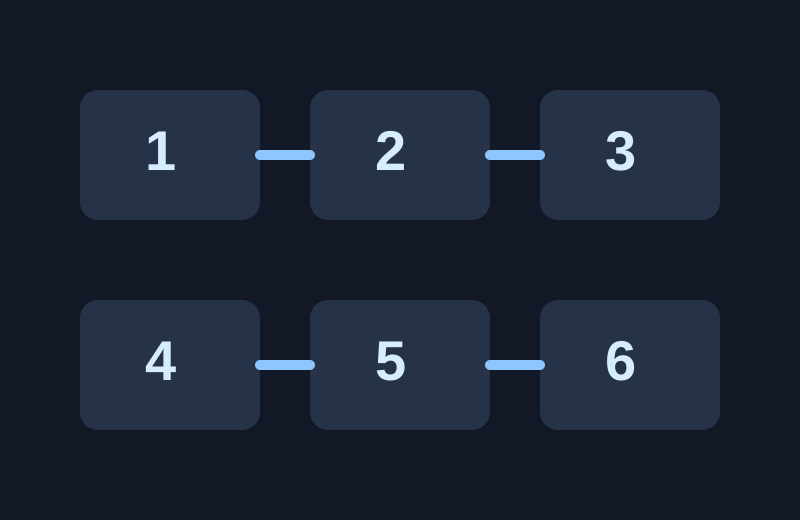
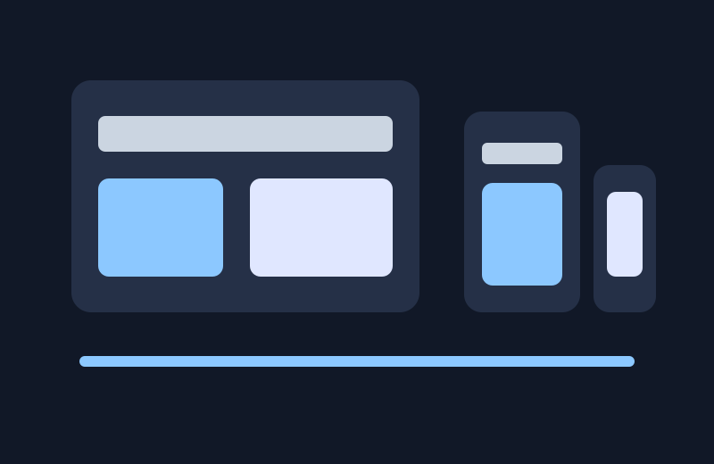
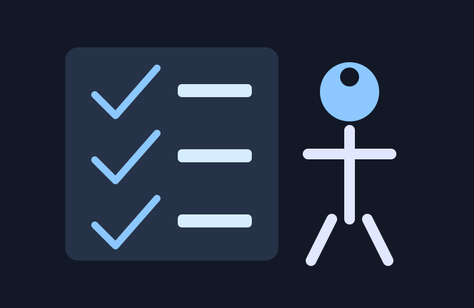

Logic Puzzle Study Layout
A concept for presenting Sudoku, chess, and logic puzzle explanations with clear steps and visual grouping.
Selected projects
This page collects project directions that connect my mathematics background with web design practice.

A concept for presenting Sudoku, chess, and logic puzzle explanations with clear steps and visual grouping.

A redesigned personal website that adapts from a one-column mobile layout to a multi-column desktop layout.

A planning tool for checking headings, alt text, link clarity, readable contrast, and keyboard-friendly navigation.
The audio element below is included as a compact web-formatted media file for the final project. It represents a short placeholder for a spoken portfolio introduction.